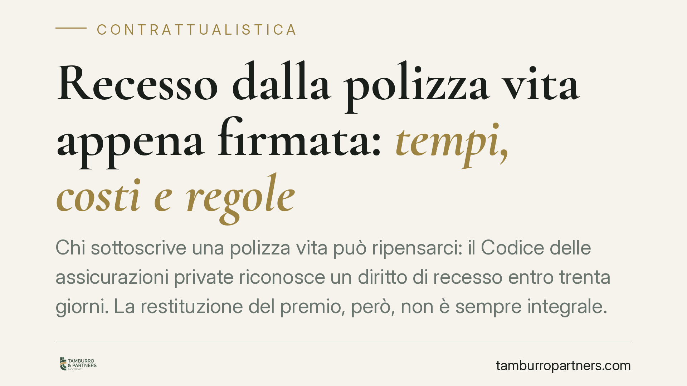

Recesso dalla polizza vita appena firmata: tempi, costi e regole
Chi sottoscrive una polizza vita può ripensarci: il Codice delle assicurazioni private riconosce un diritto di recesso entro trenta giorni. La restituzione del premio, però, non è sempre integrale. Nel frattempo la normativa europea sui contratti finanziari a distanza introduce nuovi obblighi informativi e un recesso più semplice. Facciamo chiarezza su termini, costi reali e tutele.

Il diritto di recesso dalla polizza vita
Chi firma un contratto di assicurazione sulla vita non resta vincolato in via definitiva. L'art. 177 del D.Lgs. 7 settembre 2005, n. 209 (Codice delle assicurazioni private) riconosce al contraente il diritto di recedere entro trenta giorni dal momento in cui è informato della conclusione del contratto.
Il termine decorre quindi non dalla semplice sottoscrizione della proposta, ma dalla comunicazione con cui l'impresa conferma il perfezionamento del rapporto. È un dettaglio pratico rilevante: la finestra utile può aprirsi qualche giorno dopo la firma.
Il recesso si esercita con comunicazione scritta all'impresa. Non è necessario motivarlo: è un diritto potestativo, cioè produce effetti per la sola volontà del contraente, senza che l'assicuratore possa opporsi.
Recesso "senza penalità": cosa significa davvero
L'idea di un rimborso integrale "a costo zero" è una semplificazione imprecisa. L'art. 177 prevede che l'impresa restituisca il premio versato, ma può legittimamente trattenere due voci:
- le spese effettivamente sostenute per l'emissione del contratto, se previste e quantificate in polizza;
- la frazione di premio relativa al periodo di copertura già prestato, quando la garanzia ha avuto decorrenza.
In altre parole, non esiste una penalità in senso stretto, ma il contraente non sempre recupera l'intero importo versato. Prima di firmare è bene verificare come il contratto quantifica i costi di emissione: è lì che si misura il "peso" reale del ripensamento.
Diverso è il riscatto anticipato, che riguarda la fase successiva: non è un recesso, ma lo scioglimento di un contratto già pienamente operativo, con regole e valori economici propri (spesso meno favorevoli nei primi anni). Confondere i due istituti porta ad aspettative sbagliate sul rimborso.
La riforma dei contratti finanziari a distanza
Per i contratti conclusi a distanza (online, telefono, app) il quadro si arricchisce con il recepimento della Direttiva (UE) 2023/2673, che modifica la disciplina dei servizi finanziari commercializzati a distanza ai consumatori. La direttiva fissa l'applicazione negli Stati membri a decorrere dal 19 giugno 2026.
Una precisazione sulle sigle, per evitare equivoci diffusi: il Codice delle assicurazioni private è il D.Lgs. 209/2005. Il decreto interno di recepimento della Direttiva (UE) 2023/2673 è atto distinto e successivo; numero esatto, data di entrata in vigore e misura delle sanzioni amministrative vanno verificati sul testo pubblicato in Gazzetta Ufficiale, poiché i valori circolati (ad esempio soglie fino a decine di migliaia di euro) restano da confermare sulla norma nazionale definitiva.
Le linee direttrici della riforma europea sono però chiare: obblighi informativi rafforzati prima della conclusione, introduzione di una funzione di recesso "a portata di click" e divieto di dark pattern, cioè delle interfacce costruite per indurre il consumatore a scelte non consapevoli (pulsanti ingannevoli, percorsi che ostacolano il recesso, consensi preselezionati).
Dark pattern e pratiche commerciali scorrette
Il divieto di dark pattern non nasce nel vuoto. Si innesta sulla disciplina delle pratiche commerciali scorrette già prevista dagli artt. 20 e seguenti del D.Lgs. 206/2005 (Codice del consumo), che vieta le pratiche ingannevoli e aggressive capaci di falsare il comportamento economico del consumatore medio.
Un'interfaccia che nasconde il tasto di recesso o che scoraggia la rinuncia può già oggi integrare una pratica aggressiva ai sensi dell'art. 24 del Codice del consumo. La novità europea rende il divieto esplicito e specifico per i servizi finanziari a distanza, rafforzando la posizione del contraente in sede di contestazione.
Cosa fare in concreto
- Individua la data corretta: il termine di trenta giorni decorre dalla comunicazione di conclusione del contratto, non dalla firma della proposta. Conserva la comunicazione.
- Invia il recesso per iscritto con mezzo tracciabile (PEC o raccomandata A/R), indicando numero di polizza e volontà di recedere; non è richiesta alcuna motivazione.
- Verifica la clausola sui costi: controlla quali spese di emissione l'impresa può trattenere e se la copertura è già decorsa, per stimare il rimborso effettivo.
- Per i contratti a distanza, controlla di aver ricevuto l'informativa precontrattuale completa e che il percorso di recesso online sia agevole; i vizi informativi rilevano.
- In caso di clausole oscure o di contestazioni sul rimborso, è opportuno far esaminare il contratto prima di procedere.
Disclaimer
Contributo informativo a cura di Tamburro & Partners - Avv. Giuseppe Tamburro. Non costituisce parere legale.
Ogni contratto ha il suo equilibrio.
Se vuoi una revisione delle clausole o una redazione su misura, scrivi allo studio. Ti rispondiamo entro un giorno lavorativo.